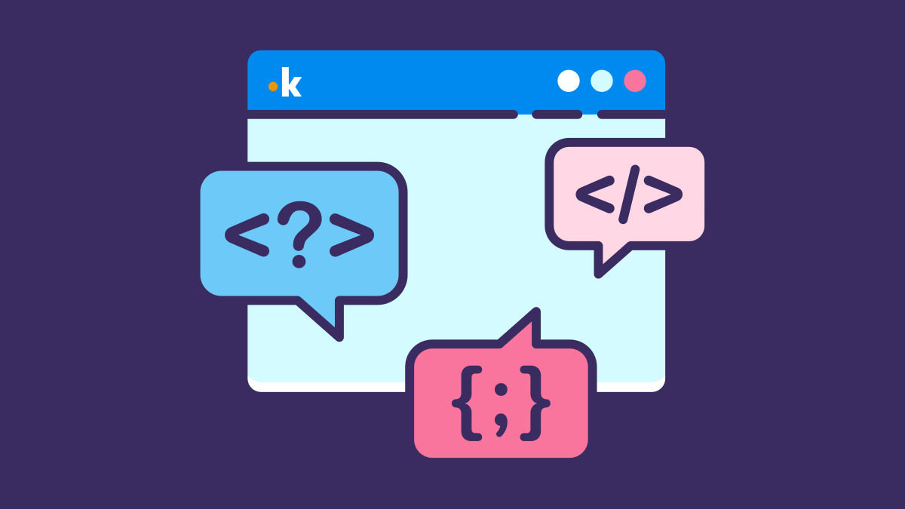
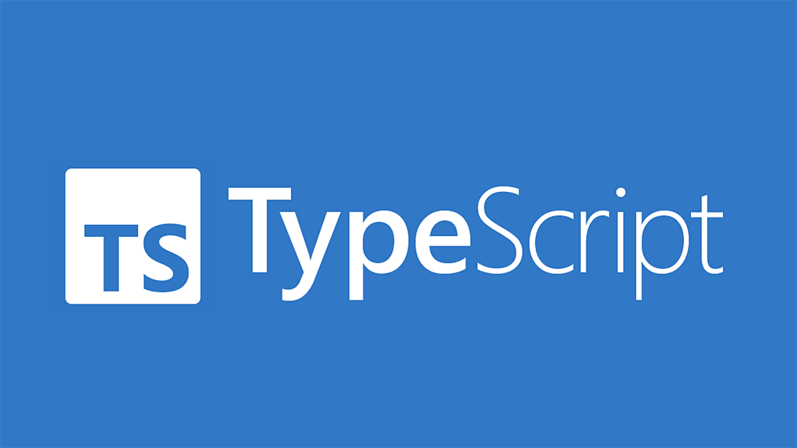

POLARITY
Durata: 2 ore + 10 minuti test finale
In data 14 gennaio 2026 si è svolto, presso l’aula magna del Blaise Pascal, un incontro tra tutte le classi quarte dell’indirizzo informatico e due rappresentanti di Polarity, azienda di Reggio Emilia attiva nello sviluppo di software. Il tema principale dell’incontro era quello delle applicazioni web moderne: sono stati affrontati argomenti generali come il significato di realizzare un applicativo digitale, le principali tecnologie utilizzate oggi e i linguaggi di programmazione più diffusi.
L’incontro è iniziato con una domanda rivolta a tutti: “Che cos’è un sito web?”. La risposta cambia in base al periodo storico a cui si fa riferimento: inizialmente il web era formato da semplici pagine scritte in linguaggio HTML, mentre oggi si è evoluto in qualcosa di molto più complesso. Al giorno d’oggi un’applicazione web è un vero e proprio software, dotato di memoria e funzioni molto articolate. Le applicazioni più utilizzate oggi sono composte da più elementi distinti, spesso sviluppati per sistemi operativi diversi; a questo si aggiungono la gestione dei dati, le risposte del server verso il dispositivo e la comunicazione tra dispositivi differenti. Da qui è emerso chiaramente che ogni parte del progetto richiede attenzione e competenze specifiche per funzionare correttamente ovunque. Tutto questo lavoro, spesso, rimane nascosto e viene sottovalutato dall’utente finale.
L'altra parte è stata dedicata ai linguaggi di programmazione più utilizzati oggi. È stato presentato JavaScript, nato inizialmente per rendere meno statiche le pagine HTML, ma evolutosi nel tempo fino a diventare un linguaggio molto versatile. Utilizzando Node.js è possibile gestire anche la parte server e la gestione dei dati, mentre con Electron si possono creare applicazioni desktop. Inoltre, con opportuni adattamenti, lo stesso codice può essere utilizzato anche su dispositivi mobili. È stato poi presentato anche TypeScript, una variante di JavaScript nata per garantire maggiore affidabilità rispetto al linguaggio base, soprattutto nei progetti più complessi o nei lavori di squadra.
È stato trattato anche il tema del lavoro sotto commissione, lo sviluppatore deve sempre tenere conto dei requisiti specifici dati dal cliente, ed rispettare i termini legali in merito alla qualità del prodotto.
Competenze:
—Competenza digitale
—Competenza matematica e competenza di base in scienze e tecnologie
—Competenza personale, sociale e capacità di imparare ad imparare
—Competenza imprenditoriale
RIFLESSIONE PERSONALE
L'incontro è stato abbastanza interessante perché mi ha permesso di capire quanto lavoro ci sia dietro la realizzazione di un’applicazione web moderna. Spesso si utilizzano siti e applicazioni senza pensare a tutta la struttura che c’è dietro, mentre adesso ho capito che per far funzionare tutto correttamente servono competenze specifiche e molto lavoro.
Mi ha colpito soprattutto la parte dedicata ai linguaggi di programmazione, perché ha mostrato come tecnologie come JavaScript e TypeScript possano essere utilizzate in diversi ambiti dello sviluppo software e non solo per quello per cui sono nate. Mi è stato utile comprendere quanto sia importante rispettare le richieste del cliente e garantire la qualità del prodotto finale.
In fine, questa attività è stata utile perché mi ha dato una visione più concreta del lavoro nello sviluppo software e mi ha fatto capire meglio quali competenze sono richieste in questo settore.